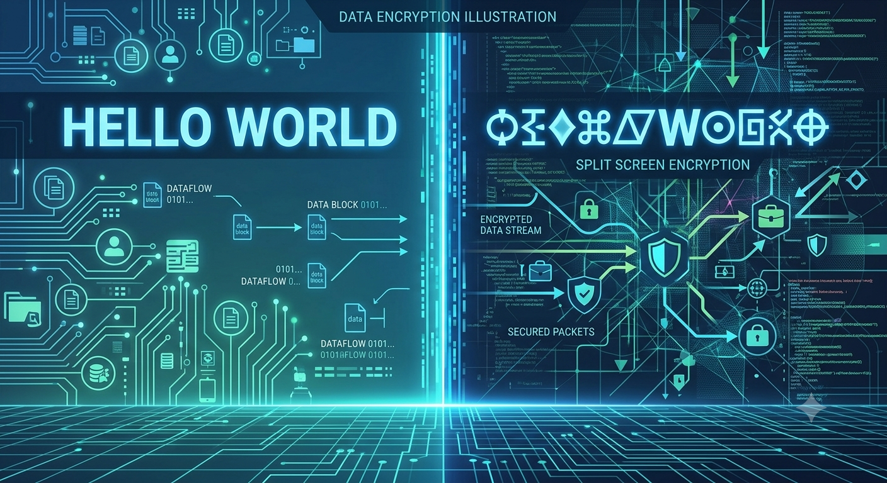
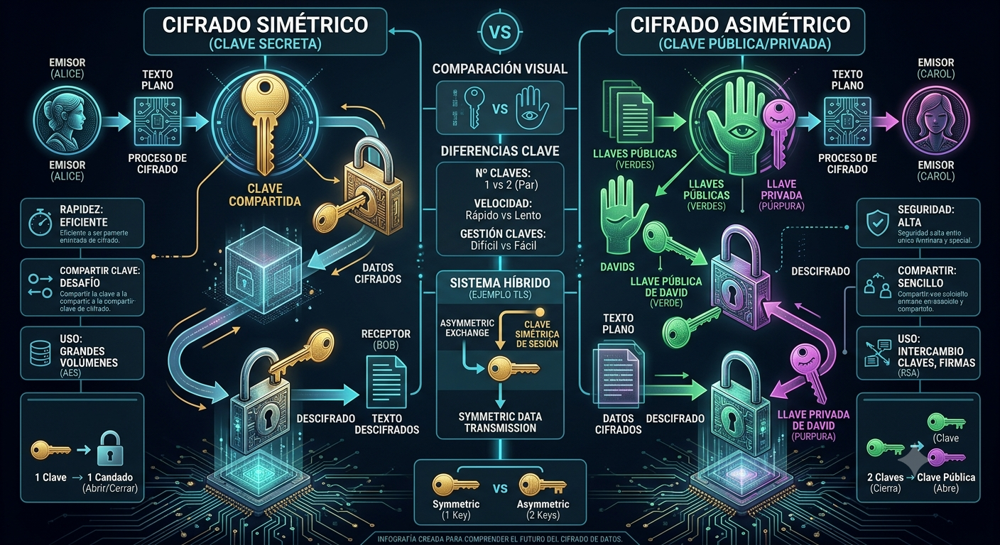

Construcción, Análisis Estructural, Desarrollo de software, Computer Vision, Machine Learning, Deep Learning, Websites
Explorar contenido ↓En la era digital actual, donde la información viaja a través de redes globales y dispositivos interconectados, la protección de los datos se ha convertido en una prioridad fundamental. La criptografía emerge como la disciplina encargada de salvaguardar la confidencialidad, integridad y autenticidad de la información, transformando mensajes legibles en formatos ininteligibles para personas no autorizadas.
El corazón de la criptografía moderna reside en los algoritmos criptográficos, complejas funciones matemáticas que permiten cifrar y descifrar datos. Estos algoritmos se clasifican en dos grandes familias: los simétricos, que utilizan una única clave para cifrar y descifrar, y los asimétricos, que emplean un par de claves (pública y privada) con funciones distintas.
La presente actividad tiene como objetivo analizar y comparar los principales algoritmos criptográficos, evaluando su velocidad, nivel de seguridad y casos de uso típicos. A través de este análisis, se busca comprender cuándo y por qué elegir un algoritmo sobre otro, dependiendo de las necesidades específicas de cada aplicación, desde el cifrado de archivos hasta las firmas digitales y la seguridad en transacciones en línea.

Video 1. Introducción a la criptografía y su importancia.
A continuación se presenta un análisis detallado de los principales algoritmos criptográficos, comparando su velocidad, nivel de seguridad y aplicaciones más comunes. La tabla está organizada en dos bloques: simétricos y asimétricos.

Figura 2. Comparativa visual entre criptografía simétrica y asimétrica.
| Algoritmo | Tipo | Velocidad | Seguridad | Casos de Uso |
|---|---|---|---|---|
| 🔑 ALGORITMOS SIMÉTRICOS | ||||
| DES Data Encryption Standard |
Simétrico | Media 56 bits, 16 rondas | Baja Obsoleto, vulnerable a ataques de fuerza bruta | Legado, sistemas antiguos |
| 3DES Triple DES |
Simétrico | Baja 168 bits, 48 rondas | Media Seguro pero lento, reemplazado por AES | ATM, sistemas financieros heredados |
| AES Advanced Encryption Standard |
Simétrico | Alta 128/192/256 bits, 10/12/14 rondas | Alta Estándar mundial, resistente a ataques | Cifrado de archivos, WiFi (WPA2), SSL/TLS |
| IDEA International Data Encryption Algorithm |
Simétrico | Media 128 bits, 8 rondas | Alta Robusto, patentado | PGP, cifrado de correo electrónico |
| RC4 Rivest Cipher 4 |
Simétrico | Alta Cifrado de flujo, variable | Baja Vulnerable, no recomendado | WEP, SSL/TLS antiguo |
| 🔓 ALGORITMOS ASIMÉTRICOS | ||||
| RSA Rivest-Shamir-Adleman |
Asimétrico | Baja 1024-4096 bits | Alta Basado en factorización de números primos | Firmas digitales, SSL/TLS, SSH |
| Diffie-Hellman | Asimétrico | Baja Intercambio de claves | Alta Basado en logaritmos discretos | Intercambio seguro de claves, VPN |
| DSA Digital Signature Algorithm |
Asimétrico | Baja Firmas digitales | Alta Estándar NIST para firmas | Firmas digitales, autenticación |
| ElGamal | Asimétrico | Baja Cifrado y firmas | Alta Basado en logaritmos discretos | Cifrado de mensajes, firmas digitales |
Video 2. Explicación de la criptografía simétrica y asimétrica.
Figura 3. La criptografía como pilar de la seguridad digital.
El análisis realizado a través del cuadro comparativo permite visualizar de manera clara las diferencias fundamentales entre los algoritmos criptográficos simétricos y asimétricos. Mientras que los primeros destacan por su rapidez y eficiencia en el cifrado de grandes volúmenes de datos, los segundos ofrecen una mayor seguridad en la gestión de claves y autenticación, aunque a costa de un rendimiento más lento.
La evolución de estos algoritmos demuestra que la seguridad no es un estado estático, sino un proceso continuo de adaptación. Algoritmos que fueron considerados seguros hace décadas, como DES o RC4, hoy son vulnerables y han sido reemplazados por alternativas más robustas como AES y RSA. Esta constante evolución es esencial para enfrentar el creciente poder computacional de los atacantes y las nuevas amenazas del ciberespacio.
En el contexto actual, la elección del algoritmo adecuado depende del equilibrio entre velocidad y seguridad, así como del caso de uso específico. Para aplicaciones que requieren cifrado masivo de datos en tiempo real, los algoritmos simétricos como AES son la opción óptima. Para transacciones seguras y autenticación digital, los asimétricos como RSA y DSA resultan indispensables.
En definitiva, la criptografía sigue siendo el pilar fundamental de la seguridad informática. Comprender las características de cada algoritmo permite a los profesionales de la seguridad tomar decisiones informadas y construir sistemas más resilientes ante las amenazas del mundo digital actual y futuro.